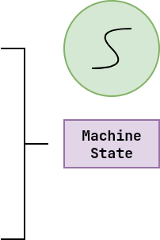
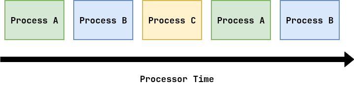
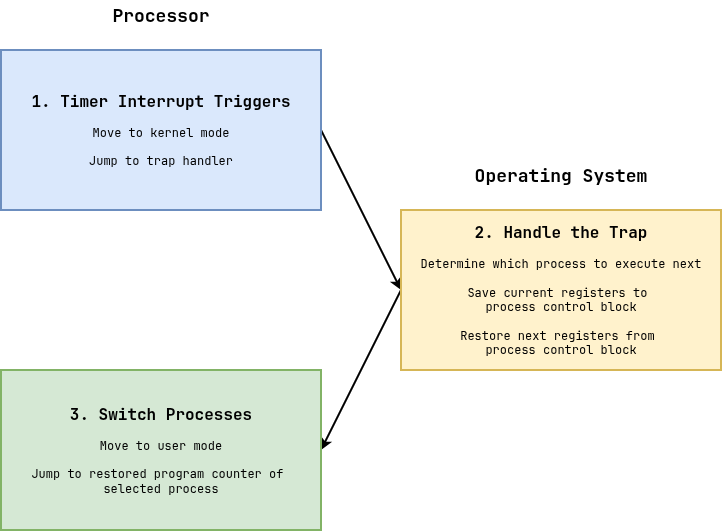
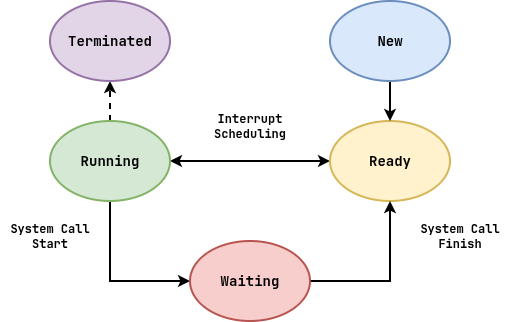
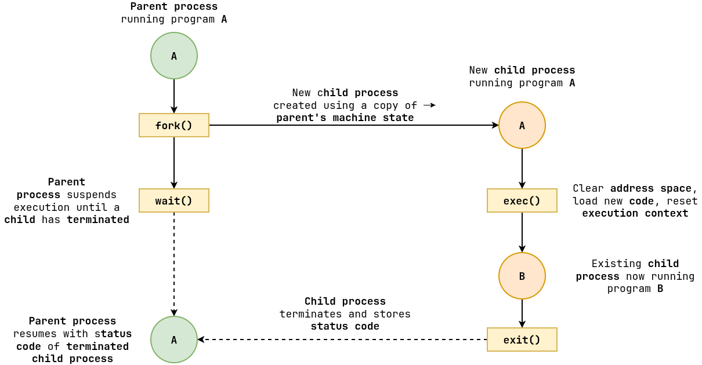

Review¶
-
What is a System Call?
User application requests a service, operation, or resource from the operating system kernel.
How is memory protection enforced?
Processor provides rings of protection (aka modes): - User Mode: applications have restricted hardware access. - Kernel Mode: operating system has unrestricted hardware access.
What happens during a System Call?
-
User application records system call number.
-
User application triggers trap.
-
Processor receives event, transitions from user mode to kernel mode, and then consults the trap table.
-
Operating system kernel performs the trap handler.
Operating system kernel is a collection of event handlers.
Process: Machine State¶
A process is a loaded instance of a program; it is a unit of allocation (resources, privileges, etc.).
-
Memory Address Space: code, data, heap, stack.
-
Kernel State: permissions, file descriptors, etc.
-
Execution Context: program counter, stack pointer, data registers.

Process: Linux¶
-
Examine struct task_struct (process control block)
stack: kernel stack pointerexit_codepid: need to keep track of this in Project 01parentchildren: tree data structurestart_time: need to keep track of this in Project 01signal: need to register these in Project 01thread: execution context
View process list
$ ps ux # User processes $ ps aux # All processes $ pstree # All processes (hierarchy)Explore process information
$ echo $$ # Process PID $ cd /proc/$$ # Process information (pseudo file system) $ cat /proc/PID/environ # Process environment variables $ cat /proc/PID/stat # Process statistics $ ls /proc/PID/fd # Process file streams $ man proc # Write to process stderr $ echo hello > /proc/PID/fd/2Process: DOS + Doom¶
What are the advantages and disadvantages of the DOS programming model?
- Single-tasking
- Dedicate all resources to application!
- Can't have background tasks
- If program crashes, whole system crashes
- Can't utilize all resources effectively (idle)
Process: Time-Sharing¶
The operating system virtualizes the processor via the process abstraction:

That is, each task is associated with a process that represents the state of the processor. To allow multiple processes to make progress concurrently, the operating system provides each process a certain time slice or share of processor time.
Process: Multitasking¶
Cooperative¶
The operating system trusts the processes to behave reasonably and voluntarily yield the processor so others can execute.

Pre-emptive¶
The operating system sets a hardware timer interrupt to periodically suspend the currently running process and possibly switch to another process.

Process: Skit¶
Closed on Sunday, you're my Chick-fil-A
Closed on Sunday, you my Chick-fil-A
Hold the selfies, put the 'Gram away
Get your family, y'all hold hands and pray
When you got daughters, always keep 'em safe
Watch out for vipers, don't let them indoctrinate
Closed on Sunday, you my Chick-fil-A
You're my number one, with the lemonade
Raise our sons, train them in the faith
Through temptations, make sure they're wide awake
Follow Jesus, listen and obey
No more livin' for the culture, we nobody's slave
Process: Context Switch¶
When a hardware timer interrupt goes off, the operating system has the option of performing a context switch (ie. switch from one process to another).

Context switches are expensive!!!
Process: States¶
A process can be in one of the following states during its lifespan:

-
Running: The process has been allocated time on the processor and is executing.
-
Ready: The process has no blocking system calls and is available to be scheduled.
-
Waiting: The process has a blocking system calls and is not able to make progress until it is finished.
Process: Life Cycle¶
-
Parent process forks to create a new child process.
-
Child process performs actions, possible execs to run another program.
-
Parent process waits for child process.
-
Child process exits.
-
Parent process receives status code of child process.

Process: hello-n.c (Version 1: Fork Bomb)¶
int main(int argc, char *argv[]) { int n = atoi(argv[1]); for (int i = 0; i < n; i++) { pid_t pid = fork(); if (pid == 0) { // Child printf("[%d] Hello from child %d\n", getpid(), i); exit(EXIT_SUCCESS); // FIXES: Fork Bomb } } return EXIT_SUCCESS; }-
Runs more than
Nprocesses. -
Ordering is different between runs.
Process: hello-n.c (Version 2: Sequential)¶
int main(int argc, char *argv[]) { int n = atoi(argv[1]); for (int i = 0; i < n; i++) { pid_t pid = fork(); if (pid == 0) { // Child printf("[%d] Hello from child %d\n", getpid(), i); exit(EXIT_SUCCESS); } else { wait(NULL); // FIXES: Zombies / Orphans } } return EXIT_SUCCESS; }- Ordering is now sequential (no concurrency).
Process: hello-n.c (Version 3: Parallel)¶
int main(int argc, char *argv[]) { int n = atoi(argv[1]); for (int i = 0; i < n; i++) { pid_t pid = fork(); if (pid == 0) { // Child printf("[%d] Hello from child %d\n", getpid(), i); exit(EXIT_SUCCESS); } } for (int i = 0; i < n; i++) { wait(NULL); // FIXES: Zombies / Orphans while keeping concurrency } return EXIT_SUCCESS; }- Now concurrent -- can be parallel if we have enough CPU cores.